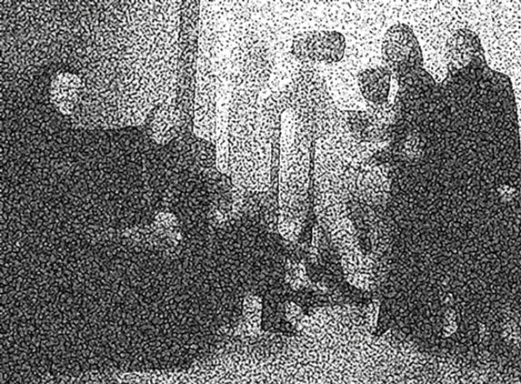

Apie grupę
Arklio Galia susikūrė 2006 metais. Nuo tada iki dabar groja.
Grupę sudaro:
p. Aškinis - gitara, armonikėlė
p. Jagėla - bosinė gitara, vokalas
p. Šykovas - elektriniai vargonai
p. Juknevičius - būgnai
p. Lučiūnas - altinis saksas, gitara
p. Žemaitytė ir toliau nesėkmingai atstovauja kultūrai.

Kreiptis 8 - 6 1 0 - 6 4 1 5 8 arba bent jau zilvinas.jagela@gmail.com